10 部片单 · 恐怖 / 科幻 / 惊悚 / 悬疑 / 剧情
| # | 片名 | 类型 | 评分 / 状态 |
|---|---|---|---|
| 01 | 狩猎 | 剧情 / 惊悚（丹麦 · 集体暴力） | 9.1 / 92% / 77 |
| 02 | 逃出绝命镇 | 惊悚 / 恐怖（美国 · 心理恐怖 · 阶层寓言） | 7.6 / 99% / 84 |
| 03 | 爆裂鼓手 | 剧情 / 心理惊悚（美国 · 音乐题材） | 8.7 / 94% / 89 |
| 04 | 小偷家族 | 剧情 / 犯罪（日本 · 戛纳金棕榈） | 8.7 / 99% / 93 |
| 05 | 瞬息全宇宙 | 科幻 / 剧情（美国 · 多元宇宙） | 7.6 / 94% / 81 |
| 06 | 仲夏夜惊魂 | 恐怖 / 惊悚（美国 / 瑞典 · 白昼恐怖 · 民俗邪教） | 6.7 / 83% / 72 |
| 07 | 沙丘 | 科幻（美国 / 加拿大 · 太空史诗） | 7.8 / 83% / 74 |
| 08 | 暴裂无声 | 悬疑 / 犯罪（中国大陆 · 社会派） | 8.2 / 7.1 / 评审团特别奖 |
| 09 | 燃烧女子的肖像 | 剧情 / 爱情（法国 · 古典） | 8.7 / 98% / 95 |
| 10 | 鬼玩人崛起 | 恐怖（美国 · 附身 / 身体恐怖） | 6.5 / 85% / 69 |
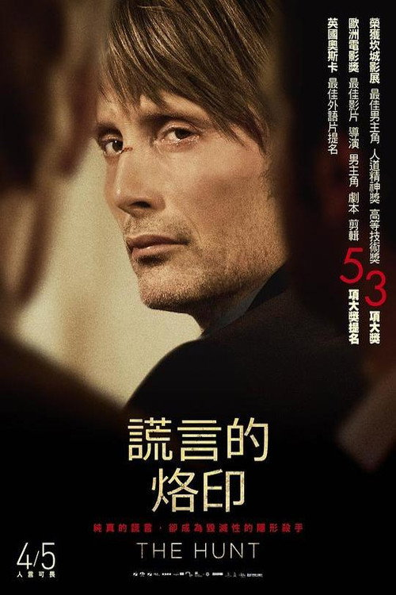
狩猎 Jagten / The Hunt
「谎言已经传开了。」
剧情梗概
卢卡斯是丹麦小镇上一所幼儿园的老师，离婚、争取儿子抚养权、刚和新同事娜迪亚开始交往，日子正一点点好起来。幼儿园里一个叫卡拉的小女孩喜欢他，送他一颗心、亲了他的嘴，被他婉拒。第二天，卡拉对园长说了一句含混的话。园长按自己的理解把它补完，然后找来了家长。到晚上，整个镇子都知道了。
亮点
- 麦斯·米科尔森凭此片拿下 2012 年戛纳主竞赛最佳男演员；影片随后入围第 86 届奥斯卡最佳外语片与金球奖。
- 温特伯格是「道格玛 95」宣言的共同签署者（成名作《家宴》1998）。本片仍用手持与自然光，但比道格玛时期克制得多——摄影机几乎不介入，只是待在那儿。
- 剧本灵感来自一位丹麦精神科医生交给温特伯格的一整袋真实案例资料，他放了十年才读完。编剧是他与托比亚斯·林道赫姆。
- 全片没有一个反派：园长、家长、好友西奥、超市店员，每个人都在做他们认为「合理」的判断，这才是它最可怕的地方。
- 关键细节：孩子们描述的施暴地点是地下室，而卢卡斯的房子根本没有地下室。这个漏洞本该救他，但它只让大人们修改了说法。
- 结尾是圣诞夜教堂里的一场对峙。一年之后狩猎仪式上的那一枪，导演始终没有交代开枪的人是谁——也没有解释为什么没人追查。
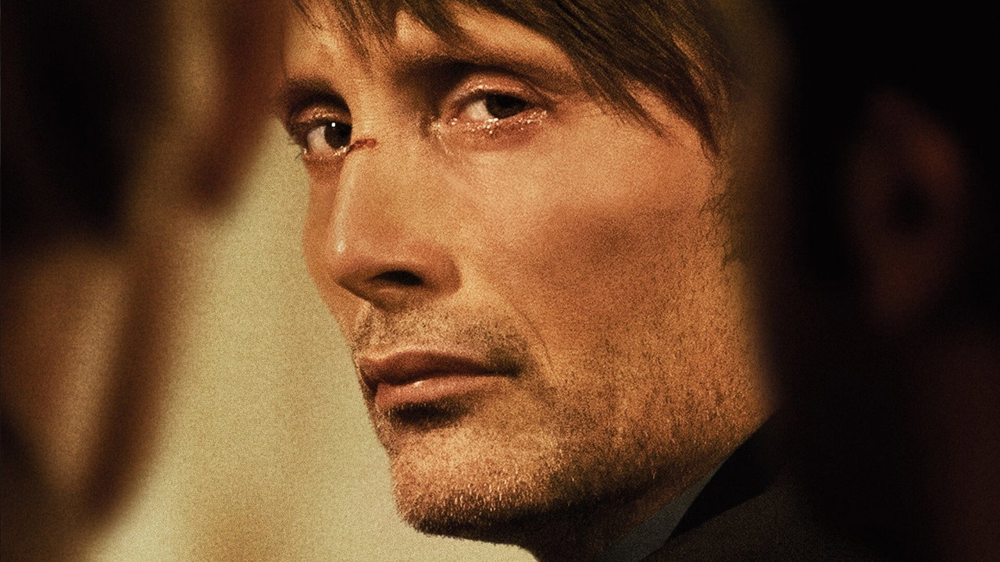
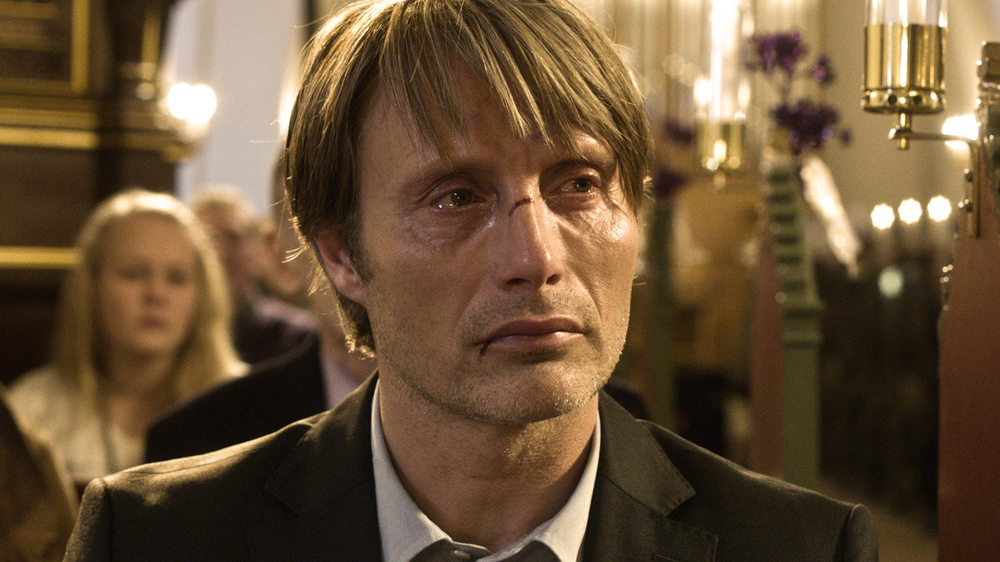
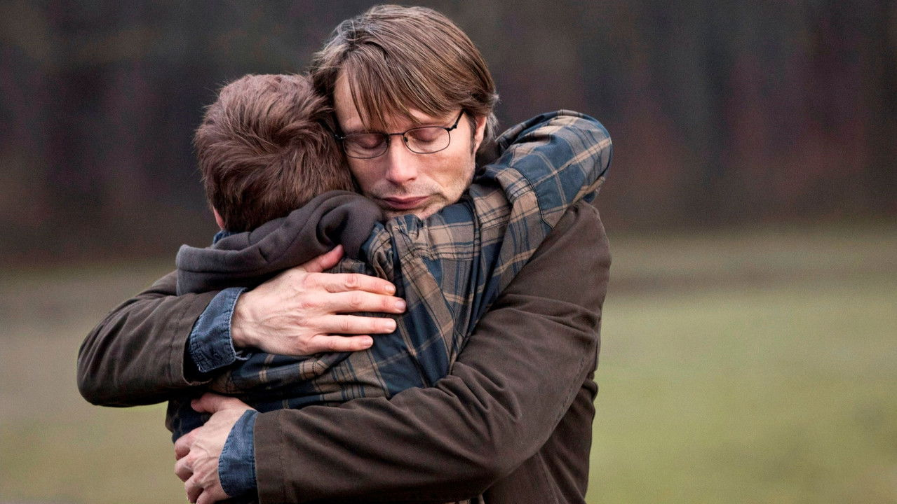
导演与主创 · 他们的历史作品
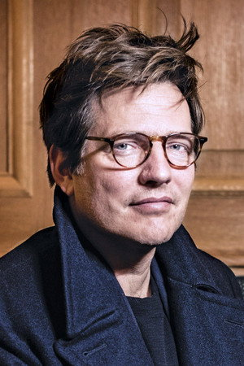
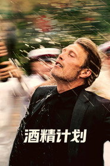
酒精计划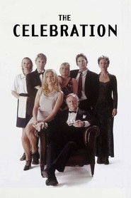
家宴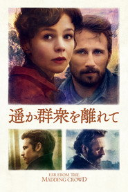
远离尘嚣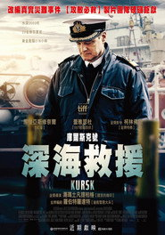
库尔斯克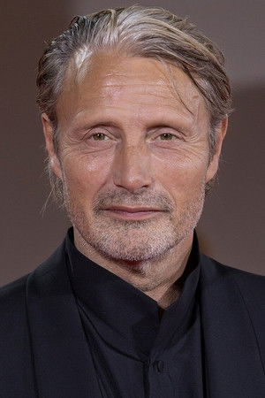
 奇异博士
奇异博士 007：大战皇家赌场
007：大战皇家赌场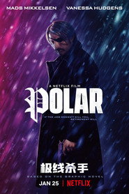
极线杀手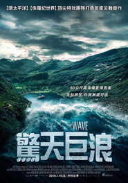
海浪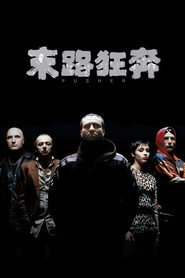
末路狂奔短评（轻微剧透）
《狩猎》最难受的地方在于：它从头到尾没有给你一个可以恨的人。轻微剧透：卡拉那句谎话说完之后，影片只用了一场戏就把镇子翻过来——园长找来的「专家」用诱导式提问，孩子们顺着大人的表情编出了细节；等孩子们说出「地下室」这个明显错误的信息时，没有人回头检查，因为结论已经被需要了。也就是说，毁掉卢卡斯的不是谎言，是所有人「愿意相信」的那一瞬间。麦斯·米科尔森的表演是它的另一半：他几乎不用表情，全靠一个越来越僵的身体——被打、被吐口水、被赶出超市，他每一次的反应都是「先愣住，再继续走」。真正的结尾是那一年后的枪响。真相早就澄清了，朋友也回来了，可有人还是朝他开了一枪。温特伯格不告诉你那是谁，因为他要说的正是：那个人可以是任何人。
为什么值得一看
喜欢《狩猎》《杀人回忆》《我们》这类「社会如何围剿一个人」的观众；想知道「群体暴力」在现实里到底长什么样的人。彩色，无血腥，含儿童性侵指控议题与动物死亡（狗被杀），情绪极沉。内地未引进，流媒体可看。
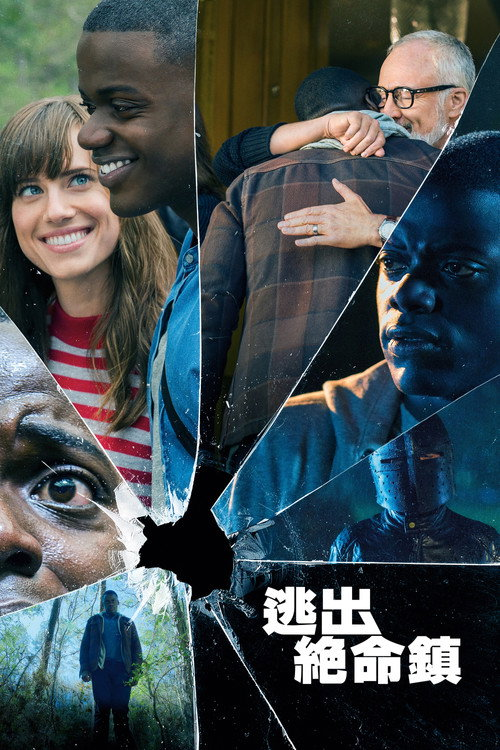
逃出绝命镇 Get Out
「不，不，不，不，不——Get out。」
剧情梗概
黑人摄影师克里斯跟着白人女友罗斯回她父母家过周末。一路上的每一句话都在强调「我们家不介意肤色」，而克里斯的每一次尴尬都被罗斯挡了回去。到了之后，父亲反复说自己在奥巴马任内投了两次票，母亲提议用催眠帮他戒烟，弟弟在饭桌上突然扑过来要跟他比力气，而院子里那两个黑人佣人的笑容，怎么看都不太对。克里斯想走，车钥匙却不在自己手里。
亮点
- 乔丹·皮尔的处女作。成本 450 万美元，全球票房超过 2.5 亿美元，28 天拍完。
- 第 90 届奥斯卡拿下最佳原创剧本，另提名最佳影片、最佳导演、最佳男主——恐怖片拿到最佳影片提名，在奥斯卡历史上极少见。
- 烂番茄 99%（231 位影评人里 230 人投新鲜），Metacritic 84；而 IMDb 7.7、豆瓣 7.6——它是一部「影评人给的分数远高于观众」的恐怖片。
- 片名来自两个方向：字面意义上的「滚出去」，以及黑人之间那句打招呼的「Get out」。同一句话，在片中两种语气都出现过。
- 「催眠」是全片的核心机制：母亲用茶杯敲出那句下沉指令，把人关进自己身体里的一个小房间——这既是剧情装置，也是整部片的隐喻。
- 皮尔原本准备了好几个结局，其中一个是克里斯被捕、被判有罪；最终版他改成了克里斯自己逃出来。他说那个版本「会让观众彻底绝望」。
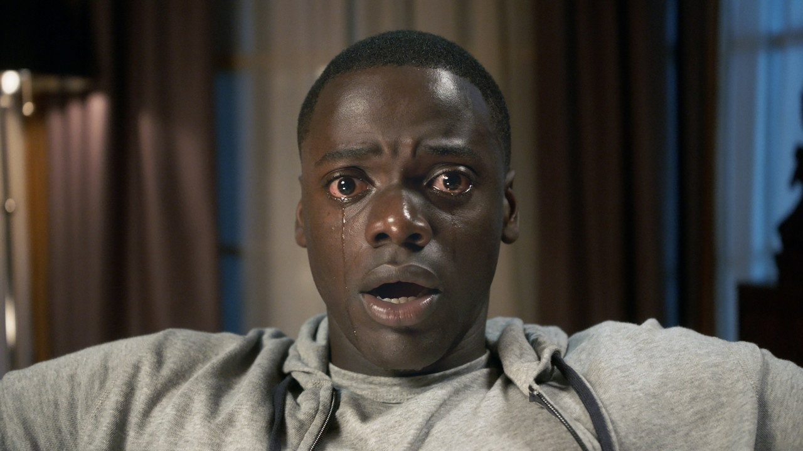
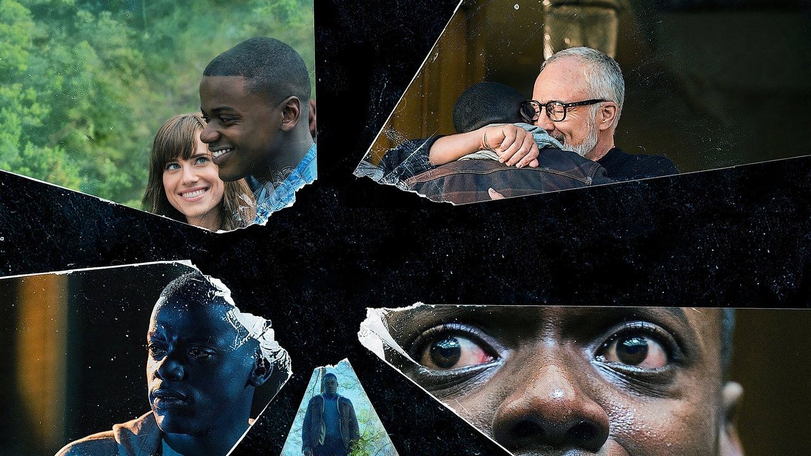
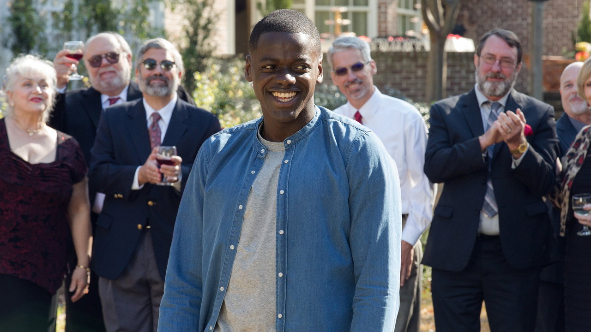
导演与主创 · 他们的历史作品

 玩具总动员4
玩具总动员4 基努猫
基努猫 我们
我们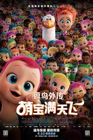
逗鸟外传：萌宝满天飞
 不
不 黑豹
黑豹 犹大与黑弥赛亚
犹大与黑弥赛亚 边境杀手
边境杀手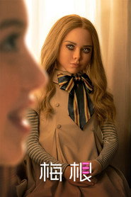
梅根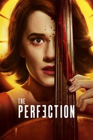
完美琴仇 为你遗憾
为你遗憾短评（轻微剧透）
它最聪明的地方是把「不舒服」拍成了主线，而不是把恐怖留到最后。前四十分钟没什么事发生，但每一句「我们真的很开放」都在把克里斯往里推——观众和克里斯一样，知道哪里不对，却说不出哪里不对，因为对方从头到尾都在做「正确」的事。轻微剧透：真正的转折不是那场拍卖，是那把茶匙。母亲敲杯子的时候，克里斯被关进了自己身体里的一个「下沉空间」：他能看见、能听见，但动不了。这一层拍得太准了——被剥夺的不是生命，是自主权。所以最后他用手堵住耳朵、用车钥匙捅死对方，动作都极其笨拙：这不是英雄反杀，是一个差点被永久关进自己身体里的人，拼命爬回来。至于为什么国内分数不如北美：这部片的笑点和恐惧都长在美国种族语境里，那句「我投过奥巴马」的荒谬，脱离语境会被读成一个普通的虚伪家长，而不是一整套系统的样子。两边看的是同一部片，但看到的不是同一层。
为什么值得一看
喜欢《万能钥匙》《隐形人》《我们》这类「越礼貌越危险」的惊悚片的人；想看恐怖片怎么处理社会议题而不说教的观众。彩色，含暴力与血腥镜头，惊吓以心理压迫为主。内地未引进，流媒体可看。
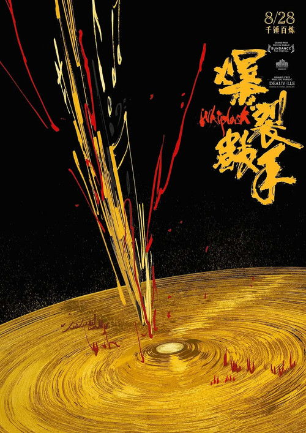
爆裂鼓手 Whiplash
「英语里最有害的两个词，是『干得不错』。」
剧情梗概
安德鲁是谢弗音乐学院一年级的爵士鼓手，被指挥弗莱彻挑进了全学院最强的一支乐队。弗莱彻会在排练时把椅子扔向他、扇他耳光、用最难听的话骂他，也会在台上笑着叫他「我的孩子」。安德鲁开始练到手出血，甩掉女朋友，跟父亲吵架。他想成为「伟大」的那一个。
亮点
- 全片只拍了 19 天。剧本最初只有 15 页，查泽雷先把它拍成 18 分钟短片，2013 年圣丹斯获奖后才拿到投资拍成长片。
- J·K·西蒙斯凭弗莱彻横扫当季：奥斯卡、金球、英国电影学院、美国演员工会，四项最佳男配全拿。
- 成本 330 万美元，全球票房约 5000 万美元。它同时拿到奥斯卡最佳剪辑与最佳音效——鼓点就是切点，剪和打是同一件事。
- 结尾那九分钟的《Caravan》独奏是实拍，迈尔斯·特勒真的打到手裂；片中血泡、绷带、冰水桶大部分是拍摄时的真实状态。
- 查泽雷本人是高中爵士鼓手，弗莱彻这个角色的原型有一部分来自他当年的乐队老师（老师本人后来还去看过这部片）。
- 提醒：这部片关于「伟大需要付出什么」的答案是开放的。它不谴责弗莱彻，也不原谅他——很多人看完会不舒服，这正是它的意图。
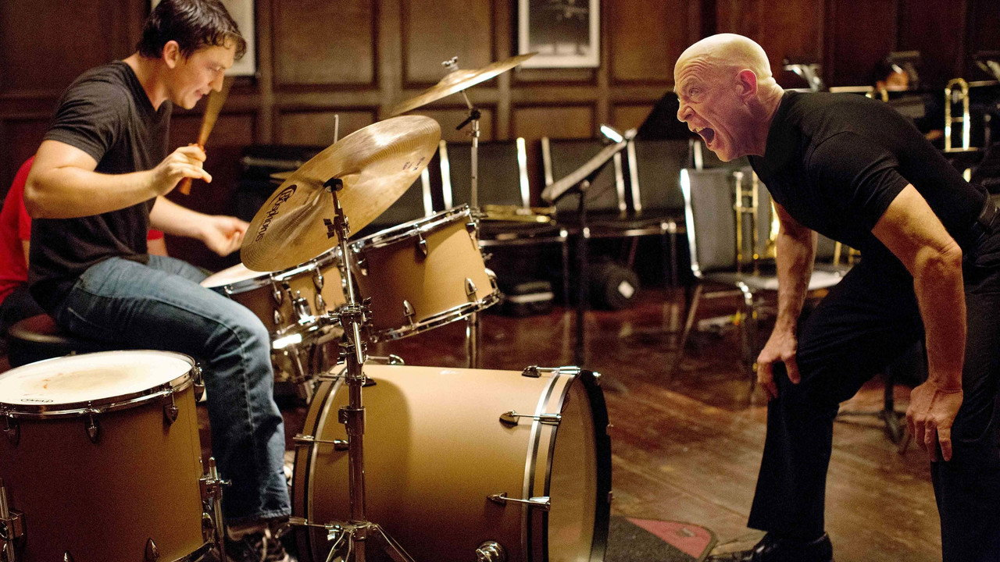
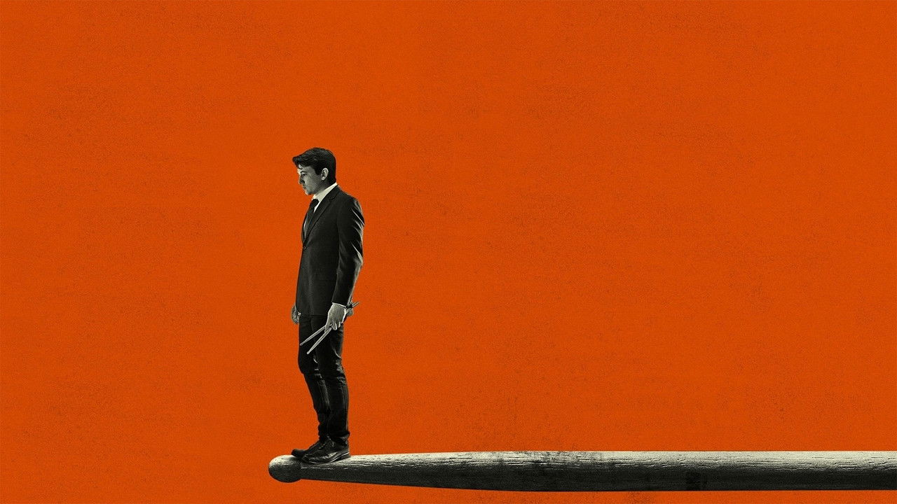
导演与主创 · 他们的历史作品
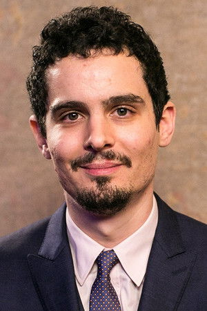
 爱乐之城
爱乐之城 登月第一人
登月第一人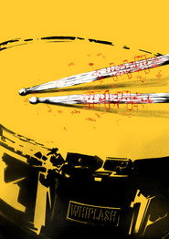
爆裂鼓手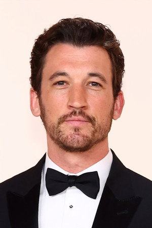
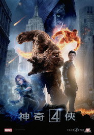
神奇四侠 壮志凌云：独行侠
壮志凌云：独行侠 军火贩
军火贩 峡谷
峡谷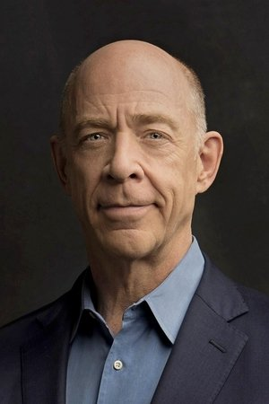
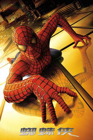
蜘蛛侠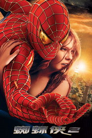
蜘蛛侠2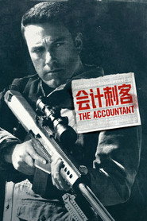
会计刺客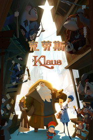
克劳斯：圣诞节的秘密短评（轻微剧透）
《爆裂鼓手》最被误解的一点是：很多人把它当成励志片。它不是。轻微剧透：最后那场音乐会，弗莱彻故意换了安德鲁不熟的曲目，当众毁掉他——这是报复，因为安德鲁之前作证把他从学校赶走了。安德鲁摔下台、被父亲接走，然后他转身走回舞台，抢过鼓槌，用一段《Caravan》把整个乐队带起来。最后两个人隔着鼓对视，弗莱彻开始给他打拍子。这个结局是全片最难解的地方：你可以读成师徒和解、读成两个疯子终于互相承认，也可以读成弗莱彻赢了——他终于把这个学生变成了自己要的那种人，代价是这个人从此再也不能正常地爱任何人。查泽雷从头到尾没有表态，他只是把镜头推到那张流汗的脸上。还有一处容易被跳过：安德鲁第一次约会时说的那句「我宁愿醉死在别人记住的名单里」，这不是玩笑，是他之后所有行为的说明书。所以它讲的不是努力，是「人为了被记住愿意把自己烧掉多少」。
为什么值得一看
喜欢《黑天鹅》《社交网络》《爆裂鼓手》这类「成就与自毁」题材的观众；想看剪辑和声音怎么把一场演奏拍成动作戏的人。彩色，含大量语言暴力、掌掴与血腥画面，心理压迫强。内地未引进，流媒体可看。
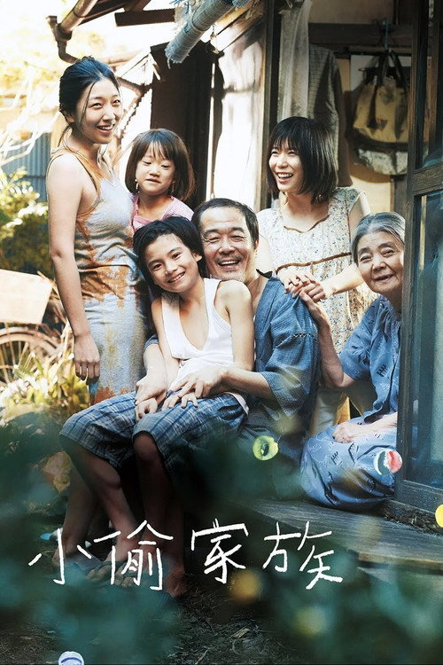
小偷家族 Shoplifters (万引き家族)
「生了孩子，就自然是母亲了吗？」
剧情梗概
东京下町一栋快塌的老房子里住着五口人：做日结短工的治、在洗衣厂做工的信代、少年祥太、在店里打工的亚纪，以及靠养老金过日子的奶奶初枝。治带着祥太在超市顺东西，是这家人的日常。某个冬夜，他们在公寓楼道里捡回一个被冻僵的小女孩由里，于是家里多了一个人——也多了一个谁都不许问的秘密。
亮点
- 2018 年戛纳金棕榈。是枝裕和此前四次入围主竞赛（《无人知晓》《如父如子》《海街日记》等），这是他第一次拿到最高奖。
- 安藤樱在结尾那场审讯戏里几乎一个人撑完全片最重的段落——没有配乐、没有剪辑点、只有她的脸和手；凭此片她横扫当年日本所有女主奖项。
- 树木希林演奶奶初枝，这是她生前最后几部作品之一（2018 年 9 月去世）。她在海边那场戏里对着一家人说出那句「谢谢你们」，全场没有台词能接。
- 是枝裕和自编自导自剪，是他作品中社会批判最锋利的一次——前作多拍「失去」，这一部拍的是「本来就没有」。
- 全片几乎不配乐，只有极少的钢琴与环境声。海边那场戏是唯一的释放，也正因为如此，后面的一切才更难承受。
- 内地 2018 年 8 月 3 日上映（删减极少），票房约 9700 万元，是当年口碑最高的引进艺术片之一。
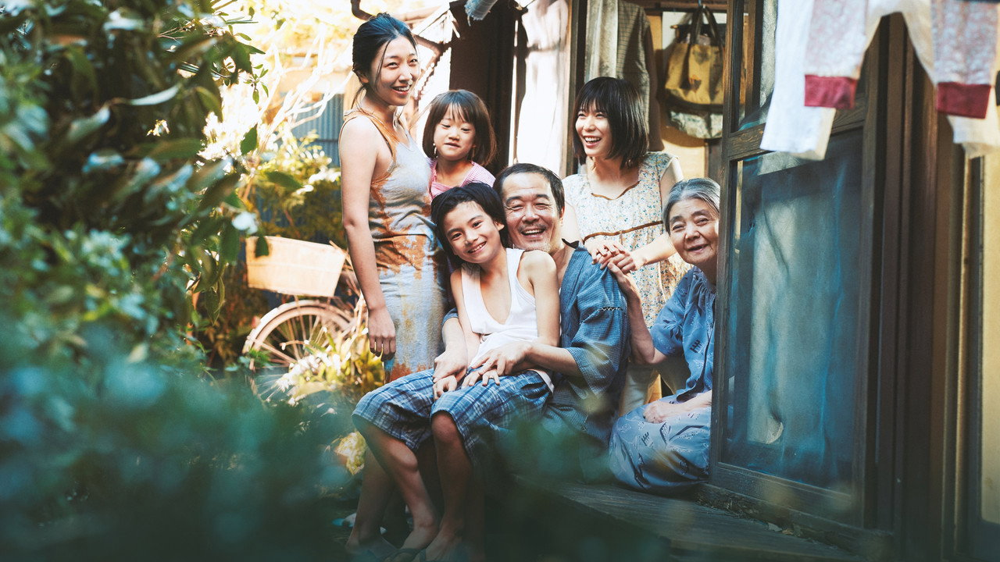
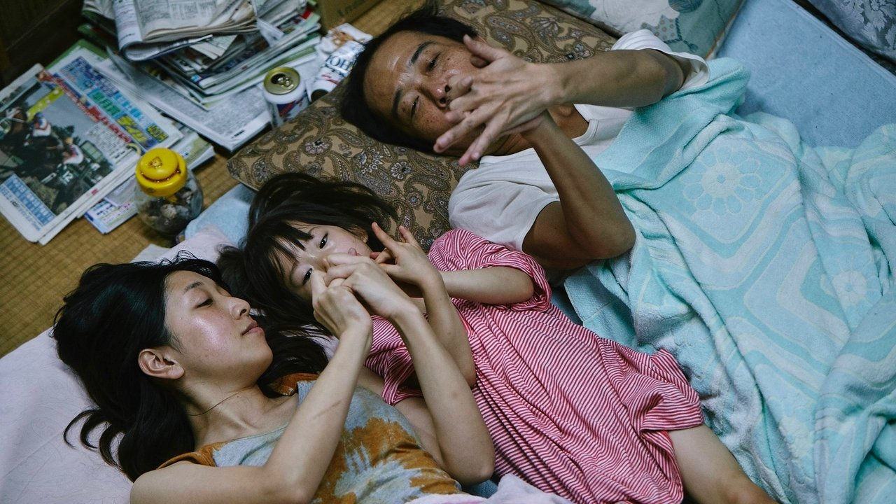
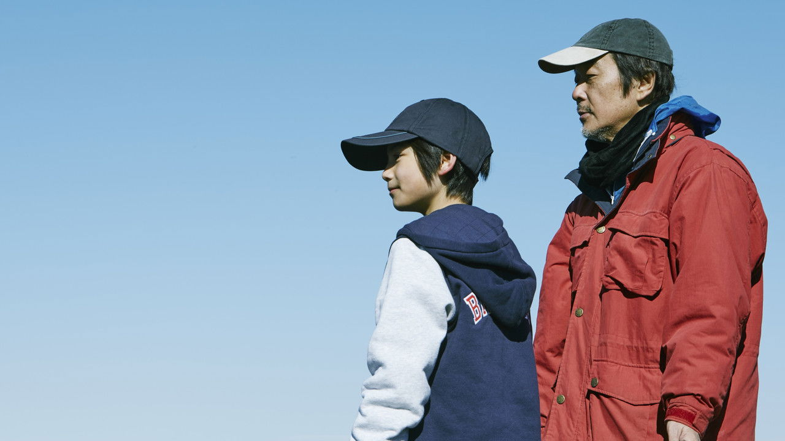
导演与主创 · 他们的历史作品
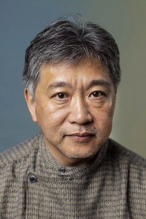
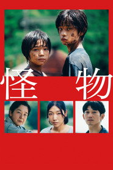
怪物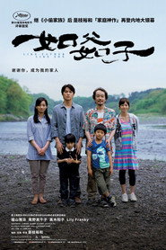
如父如子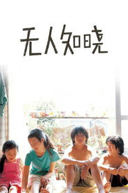
无人知晓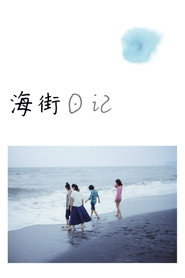
海街日记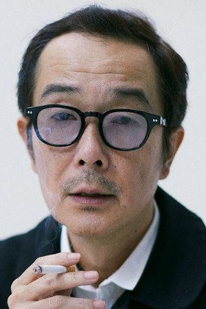
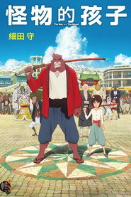
怪物之子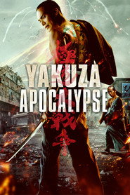
极道大战争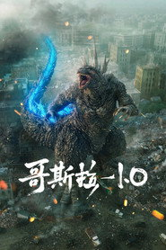
哥斯拉-1.0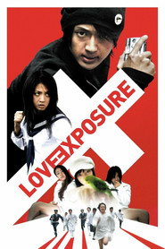
爱的曝光短评（轻微剧透）
《小偷家族》最狠的一句台词是信代被审讯时说的：「生了孩子，就自然是母亲了吗？」轻微剧透：这句话要到最后才成立——观众一路以为这是一个「被领养的孩子终于有了家」的故事，直到警方介入、档案摊开，你才发现这五个人彼此之间没有一条法律关系：治和信代不是夫妻（他们是杀人后一起逃的），祥太是治在停车场偷车时捡到的，亚纪是奶奶前夫的孙女，而初枝收留所有人，一部分原因是她想有人给她送终。也就是说，这个家里每一段关系都是「选择」出来的——因为选择，所以它比血缘家庭更真；也因为选择，它经不起一纸户口。结尾祥太在开走的巴士上回头，无声地叫了一声「爸爸」，治追着车跑，没听见。是枝裕和没有给任何和解。他只是把问题留在那儿：一个社会如果只能用「登记在册的关系」来承认人，那没被登记的那些爱，算什么。
为什么值得一看
喜欢《无人知晓》《如父如子》《寄生虫》这类家庭与社会交叉题材的观众；能接受慢节奏、几乎无配乐、情绪收着拍的人。彩色，含儿童被忽视与家暴议题，无血腥但情绪很重。内地 2018 年上映过，流媒体可看。
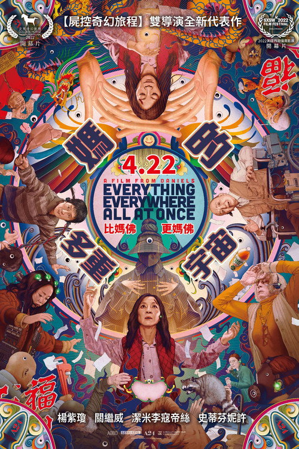
瞬息全宇宙 Everything Everywhere All at Once
「在所有我本可以成为的人里，我最想和你一起报税。」
剧情梗概
伊芙琳和丈夫威门德开着一家洗衣店，正被税务局查账；父亲从香港来，女儿乔伊想把女友介绍给外公，家庭一团糟。某天在税务局电梯里，威门德突然变成另一个版本：他说自己来自阿尔法宇宙，要伊芙琳去连接所有平行宇宙里的自己，因为有个叫「猪布土巴姬」的存在正在吞噬一切。方式很怪：吃唇膏、纸割手、把鞋反穿。
亮点
- 第 95 届奥斯卡七项大奖：最佳影片、最佳导演、最佳原创剧本、最佳女主角、最佳男配角、最佳女配角、最佳剪辑。
- 杨紫琼成为奥斯卡史上首位华裔影后。关继威凭威门德拿下最佳男配——他最广为人知的角色是《夺宝奇兵2》的豆丁和《七宝奇谋》的数据。
- 导演是「丹尼尔兄弟」关家永（Daniel Kwan）与丹尼尔·施纳特（Daniel Scheinert），前作是《瑞士军刀男》。本片筹备四年，A24 给了 2500 万美元。
- 成本 2500 万美元，全球票房 1.03 亿美元，是 A24 当时的票房纪录。热狗手指、石头宇宙这些荒诞道具，大部分是手工与实拍特效，边拍边做。
- 它在豆瓣的分裂很明显：开局 8.9，最终落在 7.6。喜欢的人称它年度最佳，不喜欢的人觉得它太吵、太满、太想讨好所有人。
- 它同时是科幻、功夫片、家庭剧、移民故事和无厘头喜剧——五种类型互相挤，这也是它让人受不了的那一面，和它了不起的那一面。
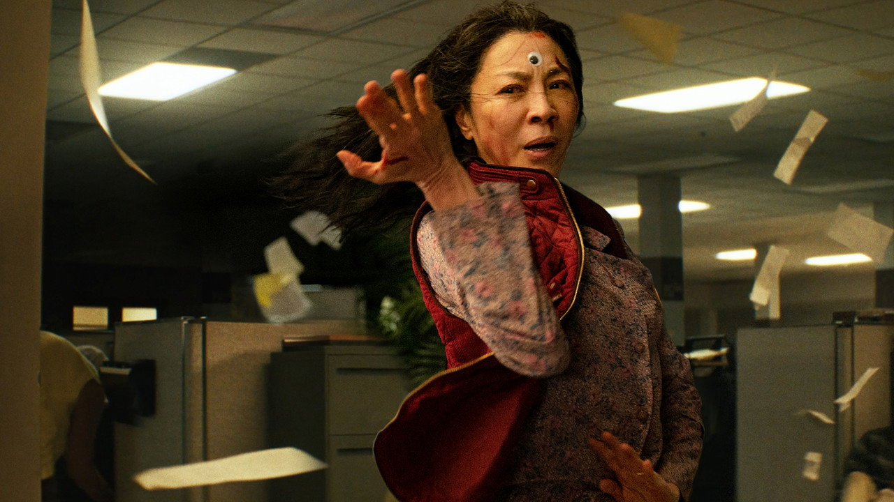
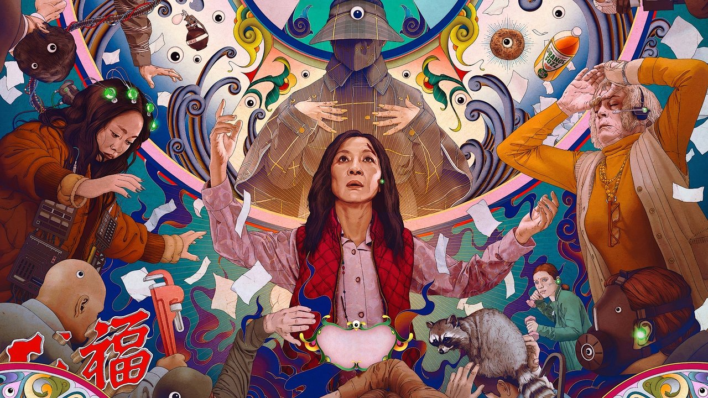
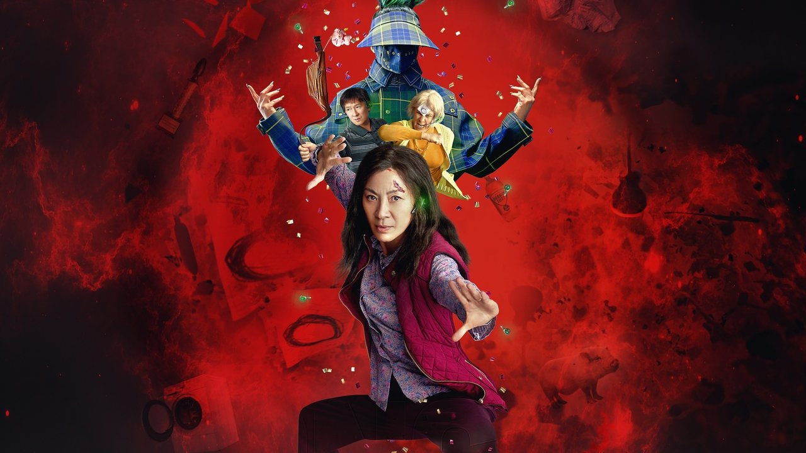
导演与主创 · 他们的历史作品
 卧虎藏龙
卧虎藏龙 尚气与十环传奇
尚气与十环传奇短评（轻微剧透）
《瞬息全宇宙》真正的主题不是多元宇宙，是「一个中年女人怎么跟自己的女儿和解」。轻微剧透：乔伊在阿尔法宇宙里的身份是猪布土巴姬——一个把所有可能性同时看过、因此觉得一切都没有意义的存在。她的贝果黑洞不是要毁灭世界，是要「什么都不必再选」。所以伊芙琳要打败的不是她，是她自己身上那份「要是当初没跟这个男人私奔就好了」的后悔。这也解释了为什么全片的解法不是打，是善良：在石头宇宙里，两块石头并排待在悬崖边，什么也没说；在热狗手指宇宙里，两个人弹着钢琴跳舞。它想说的是，既然一切都可以不重要，那选择善良也不损失什么——这个论证其实很虚无，但正因为虚无，它才对得上「我已经被生活磨到没有力气」的那批人。最后伊芙琳对税务官说的那句「在所有我本可以成为的人里，我最想和你一起报税」，是这部片唯一一次把话说白了：浪漫不是找到一个更好的人生，是认下这一份最糟的。
为什么值得一看
喜欢《瑞士军刀男》《银河系漫游指南》《蜘蛛侠：平行宇宙》这类「脑洞 + 感情」混搭的观众；想看杨紫琼职业生涯最重要一次演出的影迷。彩色，含大量荒诞暴力与粗口，节奏极快、信息密度高，容易审美疲劳。内地未引进，流媒体可看。

仲夏夜惊魂 Midsommar
「你感到被照顾了吗？」
剧情梗概
丹妮的姐姐带着父母一起自杀，只留下一封遗书。男友克里斯蒂安没敢分手，于是把她带上了自己和朋友们的瑞典之行——他们要去同学佩尔的家乡，参加一个每九十年才办一次的仲夏节。村子在世界尽头，太阳整夜不落，所有人穿白、戴花、手拉手跳舞。仪式一项项推进，从致幻蘑菇开始，到悬崖跳崖，再到那些「外来者」一个接一个消失。丹妮一开始是哭的那个，慢慢地，她成了唯一笑得出来的那个。
亮点
- 阿里·艾斯特的第二部长片。他明确说过：《遗传厄运》在他自己眼里是家庭悲剧，这一部才是他的第一部恐怖片。
- 全片几乎发生在正午的阳光下——「白昼恐怖」是它最反直觉也最有效的设计：你什么都能看清，所以什么也躲不掉。
- 弗洛伦丝·皮尤凭此片拿下第 13 届底特律影评人协会奖最佳新人，并入围哥谭奖最佳女演员；她的哭戏开场是全片情绪的锚点。
- 片中的壁画、符文与仪式流程都是美术组按北欧民俗（尤其是 Hälsingland 地区的仲夏传统）重新设计出来的，不是随手拼贴。
- 导演剪辑版 171 分钟，比公映版多出近 25 分钟——多出来的大部分是丹妮与克里斯蒂安关系的裂缝，看过之后会对结局更不舒服。
- 口碑分化明显：烂番茄 83%、Metacritic 72，但观众分只有 63%；豆瓣 6.7 更是明显低于欧美。它被人骂得最多的一点是「猎奇」和「节奏拖」。
导演与主创 · 他们的历史作品

 遗传厄运
遗传厄运 博很恐惧
博很恐惧 爱丁顿
爱丁顿 约翰逊家的怪事（短片）
约翰逊家的怪事（短片） 黑寡妇
黑寡妇 奥本海默
奥本海默
 木乃伊
木乃伊 变形金刚4：绝迹重生
变形金刚4：绝迹重生 初恋这首情歌
初恋这首情歌 谢里
谢里短评（轻微剧透）
很多人把它当成「邪教片」看，其实它从头到尾讲的是分手。轻微剧透：丹妮不是被骗进去的，她是自己走进去的——她刚失去全部家人，而克里斯蒂安从头到尾都在「维持关系」，没有一次真的接住她。村子里没人骗她：他们只是每一次都在她崩溃的时候递上一只手，说「你不是一个人」。所以最后那场选王仪式，丹妮笑着的那个表情，是这部片最冷的地方——她不是被洗脑，她是终于被当成一个人对待了，代价是她身边所有人都得死。艾斯特真正的技巧是：让观众和丹妮一起觉得这个村子是对的。你明知道那套东西建立在杀人上，但每当镜头切到克里斯蒂安那些只会吐槽、只想着论文选题的朋友，你又会觉得他们确实该消失。至于豆瓣为什么只有 6.7：这部片的恐怖是关系层面的，脱离「长期被伴侣敷衍」的体验去看，就只剩下猎奇和慢节奏了。
为什么值得一看
喜欢《遗传厄运》《异教徒》《圣餐》这类民俗 / 邪教恐怖的人；能接受阳光下的血腥、动物尸体与性暗示画面的人（不适感来自「画面太亮」而非血浆量）。彩色，R 级，建议看 147 分钟公映版。内地未引进，流媒体可看。
沙丘 Dune
「恐惧是思维杀手。」
剧情梗概
公元 10191 年，宇宙靠一种叫「香料」的东西维系星际航行，而香料只产在沙漠星球厄拉科斯。皇帝把厄拉科斯的采邑从哈克南家族转交给厄崔迪家族——这不是恩赏，是陷阱。公爵雷托带着儿子保罗与杰西卡夫人前往沙漠，很快遭遇背叛。活下来的人走进沙丘深处，遇上了真正的原住民弗雷曼人。
亮点
- 第 94 届奥斯卡十项提名、六项获奖：摄影、剪辑、视觉效果、原创配乐、音效、艺术指导。
- 汉斯·季默为这部片准备了两年，拒绝沿用任何「太空片」的声音套路，用了大量非西方乐器与女声，要求听起来「不属于这个星球」。
- 这是《沙丘》第三次被搬上银幕：1970 年代佐杜洛夫斯基的版本胎死腹中（只留下一本厚厚的设定册），1984 年大卫·林奇的版本票房口碑双败。
- 维伦纽瓦只拍了原著第一部的上半部，影片停在保罗走进沙漠——所以它被叫做「半部《沙丘》」，续作 2024 年才补齐。
- 张震演岳医生，台词里有中文。维伦纽瓦是在看过《春光乍泄》之后专门为他加了这个角色，还特意给岳设计了中文对白。
- 内地 2021 年 10 月 22 日上映，正面撞上《长津湖》，两天破亿但排片被压，最终票房约 1.1 亿元人民币。
导演与主创 · 他们的历史作品

 降临
降临 银翼杀手2049
银翼杀手2049 囚徒边境杀手
囚徒边境杀手
 请以你的名字呼唤我
请以你的名字呼唤我 沙丘2
沙丘2 旺卡
旺卡 兰开斯特之王
兰开斯特之王
 火车上的女孩沙丘2
火车上的女孩沙丘2 异星觉醒
异星觉醒短评（轻微剧透）
《沙丘》不是一个英雄成长的故事，是一个「被安排好的救世主」的故事。轻微剧透：全片最关键的设定藏在杰西卡夫人身上——她是贝尼·杰瑟里特姐妹会的成员，而这个姐妹会用几千年的育种计划，就是要造出一个「奎萨茨·哈德拉克」：一个能同时看到过去与未来的男性。保罗不是天选的，他是被设计出来的，而且他越早看到未来，就越发现那条路通向的是一场以他之名发动的圣战。这是维伦纽瓦拍这部片真正的意图：他给了一个少年所有英雄该有的东西（预知梦、天赋、被预言选中），然后让你看着这些东西一步步变成枷锁。所以它的节奏慢不是因为拖，是因为「宿命」这件事必须被堆到足够重，观众才会明白保罗最后为什么害怕。也解释了为什么它在国内评分只有 7.8 而海外 IMDb 8.0、技术奖项拿到手软：它牺牲了情节的爽感换取氛围，而氛围这种东西，在手机上是打折扣的。
为什么值得一看
喜欢《降临》《银翼杀手2049》《星际穿越》这类「重氛围、重体量」科幻的观众；想看当今最好的摄影与声音设计能到什么程度的人。彩色 PG-13，含战争与暴力画面，节奏缓慢，156 分钟需耐心。内地 2021 年上映过，流媒体可看。
暴裂无声 Wrath of Silence
（主角全片没有一句台词。）
剧情梗概
2004 年，北方矿区小镇。哑巴矿工张保民被叫回家，儿子张磊放羊时失踪了。他揣着儿子的照片一路找，撞上弘昌矿业老板昌万年的手下，打了一架；又在山里救下一个被绑架的女孩——她是昌万年请的律师徐文杰的女儿。徐文杰知道张磊去了哪儿，但他不说。三个人，三条线索，一层一层往下压。
亮点
- 忻钰坤的第二部长片。处女作《心迷宫》(2014) 成本 170 万、豆瓣 8.8，靠多线叙事惊艳；这一部他反而改用线性叙事，把力气都放在社会结构上。
- 宋洋演失语矿工张保民，全片零台词，靠身体与眼神撑完 120 分钟，拿下第 2 届澳门国际影展最佳男主角。拍滚山坡那场戏时他眼部受伤，缝了十几针。
- 三个男人对应三个阶层：底层失语（张保民只能用拳头说话）、中层失德（律师徐文杰看见了却沉默）、上层失格（煤老板昌万年吃人都不用自己动手）。
- 羊肉是全片的食物链隐喻：涮羊肉、切肉机、生肉、炖汤反复出现——谁在切、谁在被切，镜头说得很清楚。
- 姜武演昌万年：戴假发、做慈善、吃番茄、在办公室里射弩。这个角色是全片最让人发毛的「体面人」，番茄的红是他出场的标记。
- 内地 2018 年 4 月 4 日上映，票房 5425.6 万元；豆瓣 8.2，是近十年国产犯罪片里口碑最高的一部。
导演与主创 · 他们的历史作品
 捉妖记
捉妖记短评（轻微剧透）
《暴裂无声》是一个没有出口的故事，它的力量也在这里。轻微剧透：昌万年在非法狩猎时误把山坡上的张磊当成猎物射杀，律师徐文杰在场，看见了全过程，然后选择沉默——因为昌万年手上有他的把柄，也因为他自己那点体面生活不想丢。也就是说，两个「有语言」的人合伙把真相咽了下去，而唯一想查清楚的人恰恰说不出话。这是忻钰坤最狠的设计：他把「失语」从生理缺陷变成了社会结构——张保民在片中会写字、会打手势、会砸东西，但没有一件事能被听进去。结尾他没有找到儿子的尸体，只看到律师女儿画的一幅画；真相被知道了，正义没有发生，随后山体塌了。三部曲式的食物链到这儿就闭上了：羊吃草、人吃羊、矿吃人、山吃掉一切。它的豆瓣 8.2 不是因为烧脑，是因为它把「阶层」这件事拍成了具体的、有重量的、看得见的东西。
为什么值得一看
喜欢《心迷宫》《白日焰火》《烈日灼心》这类国产犯罪片的观众；想看「社会派悬疑」而不是「推理游戏」的人。彩色，含暴力、弓弩与儿童遇害议题，情绪极沉。内地 2018 年上映过，流媒体可看。
燃烧女子的肖像 Portrait of a Lady on Fire
「别遗憾，要记得。」
剧情梗概
1760 年，布列塔尼海边的孤岛。画师玛丽安受雇为即将出嫁的贵族少女艾洛伊兹画一幅肖像，寄给米兰的未婚夫。上一个画师失败了——艾洛伊兹不肯坐着让人画。于是玛丽安白天偷偷观察她，晚上凭记忆画。两人一起散步、读神话、帮女仆堕胎。画像完成的那天，也是她们分手的开始。
亮点
- 2019 年戛纳最佳编剧 + 酷儿金棕榈（首次颁给女性导演的作品）。
- 前 60 分钟完全没有配乐。音乐只在两处出现：海边篝火旁女人们的吟唱，以及多年后音乐厅里的维瓦尔第《四季·夏》——两次都是艾洛伊兹「第一次真正听见」的时刻。
- 全片的核心动作是「看」：画师看模特，模特回头看画师。席安玛把凝视还给了被画的人，这是它和所有古典爱情片的分界线。
- 阿黛拉·哈内尔 2023 年公开宣布退出影坛，抗议行业对性侵的包庇。本片成为她最后的重要作品之一。
- 片中反复讨论俄耳甫斯与欧律狄刻：他为什么回头？玛丽安给出的答案不是「因为爱」，是「他选择记住她」——这句解释就是整部片的结尾。
- 摄影几乎只用自然光与烛火。绿裙与红裙的两次出现，是两段关系状态的标记：绿是开始，红是结束。
导演与主创 · 他们的历史作品
短评（轻微剧透）
《燃烧女子的肖像》是一部关于「看」的电影，所以它最动人的时刻都不是说话的时刻。轻微剧透：玛丽安画的第一版肖像被艾洛伊兹否掉了——不是画得不像，是「我不在那儿」。这句话逼出了全片的核心：她要的不是被画得美，是被看见。所以两人之后的相处其实是一场交换：白天玛丽安看她，晚上她看玛丽安画，直到两个人的目光对上。这也就是为什么分手的那场戏几乎没有对白：艾洛伊兹说「回头吧」，玛丽安真的回头了，看见她穿着婚纱站在门口——那是俄耳甫斯回头的那一眼，也是她们此生最后一眼。多年后的两个结尾把这件事做完：音乐厅里，艾洛伊兹听着《四季》落泪，玛丽安在二楼看着她；画展上，玛丽安看见艾洛伊兹的肖像，画里翻开的页码是 28——那是当年她在这页乐谱上给艾洛伊兹看过的那一页。两个人再没说过话，但她们都知道对方记得。席安玛把「永恒」这件事处理得非常具体：不是在一起，是「被一个人这么看过一次，你这辈子就跑不掉了」。
为什么值得一看
喜欢《请以你的名字呼唤我》《卡罗尔》《钢琴课》这类细腻情感片的观众；想看「凝视」这件事怎么被拍成剧情的人。彩色，含成人情感与裸露段落，无血腥，节奏克制缓慢。内地未引进，流媒体可看。
鬼玩人崛起 Evil Dead Rise
「妈妈爱你爱到死。」
剧情梗概
洛杉矶一栋待拆的旧公寓楼里，纹身师贝丝去看望久未见面的姐姐艾莉——艾莉带着三个孩子住在 12 楼，靠给美容院做头发糊口。一次地震后，孩子们在地下车库发现一本封在人皮里、配着三张虫胶唱片的书。大儿子放了唱片。那天夜里，艾莉「回来了」，但她已经不是艾莉。电梯坏了，楼梯被堵，整层楼只剩下他们。
亮点
- 系列主创山姆·雷米与布鲁斯·坎贝尔担任执行制片，剧本与导演由爱尔兰导演李·克罗宁（《地面之洞》2019）一手完成。
- 这是《鬼玩人》第一次离开林中小屋：把场景搬进城市高层公寓，用电梯井、走廊、地下车库重做了一遍封闭空间。
- 全片坚持实体特效——血浆、断肢、道具假体极少用 CG。楼梯间与电梯那两场是近年院线恐怖片里最猛的段落之一。
- 阿丽莎·萨瑟兰演被附身的姐姐艾莉。她最广为人知的角色是《穿普拉达的女王》里的同事与剧集《维京传奇》的亚丝拉琪，本片她几乎靠身体完成整场附身。
- 成本 1500 万美元，全球票房约 1.47 亿美元，是整个系列最卖座的一部。
- 口碑分裂得厉害：烂番茄 85%、豆瓣只有 6.5。喜欢的人夸它血浆给得痛快，不喜欢的人嫌它除了血什么都没留下。
导演与主创 · 他们的历史作品
 木乃伊
木乃伊 地面之洞
地面之洞 午夜惊魂梦木乃伊
午夜惊魂梦木乃伊 穿普拉达的女王
穿普拉达的女王 鬼玩人：炼狱
鬼玩人：炼狱短评（轻微剧透）
《鬼玩人崛起》聪明的一点是它把「家庭」这个词反过来用。轻微剧透：被附身的不是陌生人，是妈妈。孩子们面对的不是怪物，是「妈妈还在里面吗」这个问题——贝丝必须一边救孩子，一边亲手动刀砍向姐姐的身体。李·克罗宁把恐怖从「外面有东西」改成了「最亲的人变成了东西」，所以这部片真正吓人的段落不是断肢，是艾莉用艾莉的声音说「妈妈爱你爱到死」。中段有一场戏是全片的转折：孩子们曾经想把她当作妈妈救回来，最后决定把她当作怪物处理。这场戏很残忍，但它是整部片的主题句——依附关系一旦被破坏，仪式就得由还在的人来完成。至于结尾：贝丝和卡西活着走出大楼，镜头随即切到湖边小屋，一个来度假的女孩在林子里被什么东西盯上。这个收尾既是对 1981 年原版的回敬，也说明这套东西从来没打算放过谁。它在豆瓣只有 6.5 完全可以理解：它确实没有野心，只有执行力，血浆是它的全部语言。但如果你今晚就想看一部不用动脑、能让你从沙发上弹起来的片，它几乎是最近几年最称职的一个。
为什么值得一看
喜欢《鬼玩人》(1981/2013)、《群尸玩过界》《野蛮人》这类血浆片的观众；想看实体特效而不是 CG 的恐怖片爱好者。彩色 R 级，含极端血腥、断肢、儿童遇险，生理刺激强烈。内地未引进，流媒体可看。